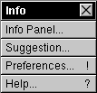

The Info Menu


The Info menu allows you to:
 Display Resound's Info Panel, for version information and program credits.
Display Resound's Info Panel, for version information and program credits.
 Mail the author, Sean Luke, a Suggestion..
Mail the author, Sean Luke, a Suggestion..
 Call up Resound's Preferences panel, which allows you to set common preferred settings in Resound. For more information on the Preferences panel, press here:
Call up Resound's Preferences panel, which allows you to set common preferred settings in Resound. For more information on the Preferences panel, press here: 
 Display this Help panel.
Display this Help panel.